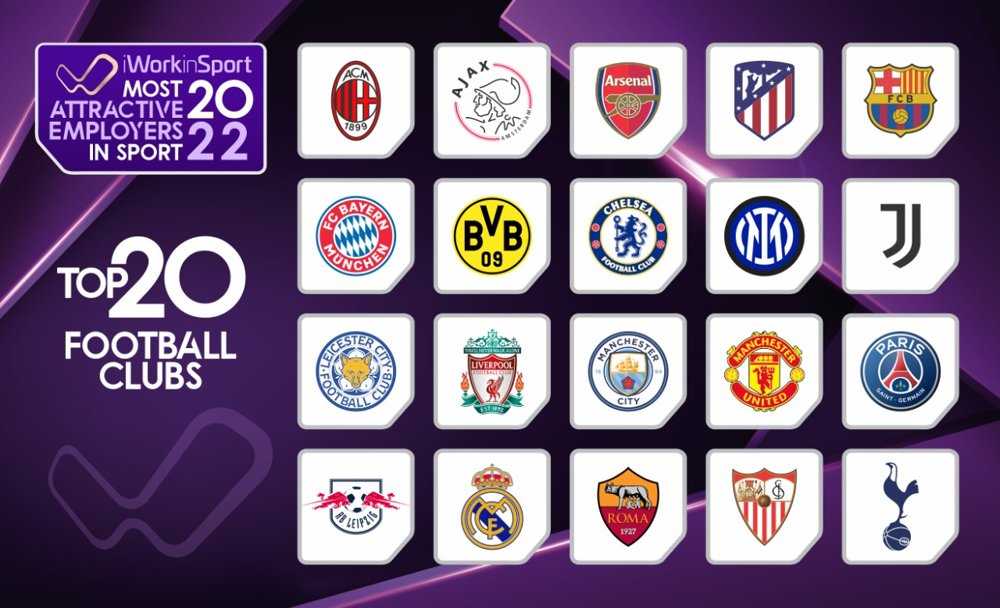

History of Football
The origins of football can be traced back to ancient times, with various forms of the game being played by different cultures throughout history. Modern football, as we know it today, began to take shape in the 19th century in England, with the establishment of official rules and organized competitions.

Rules of Football
Football is played on a rectangular field with a goal at each end. The objective of the game is to score goals by kicking the ball into the opposing team's goal. Players are not allowed to use their hands or arms, except for the goalkeeper within their penalty area.
Some key rules include offside, fouls, penalties, and throw-ins. Offside is when a player is in the opposing team's half of the field and closer to the opponent's goal line than both the ball and the second-to-last opponent. Fouls are penalized by free kicks or penalties, depending on the severity and location of the offense.

Football Teams
There are thousands of football clubs and teams around the world, competing at various levels of competition. Some of the most famous football clubs include:
- Real Madrid
- Barcelona
- Manchester United
- Bayern Munich
- Liverpool
- Juventus
- Paris Saint-Germain
- AC Milan
- Ajax Amsterdam
- Borussia Dortmund
These clubs compete in domestic leagues such as the English Premier League, La Liga, Serie A, Bundesliga, and Ligue 1, as well as international competitions like the UEFA Champions League and FIFA Club World Cup.
